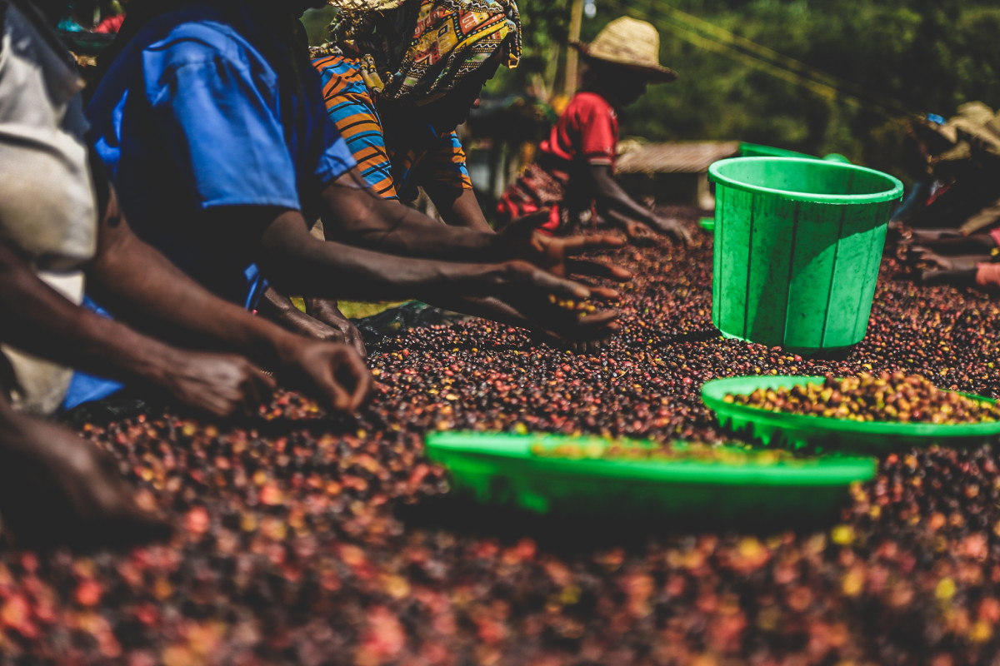
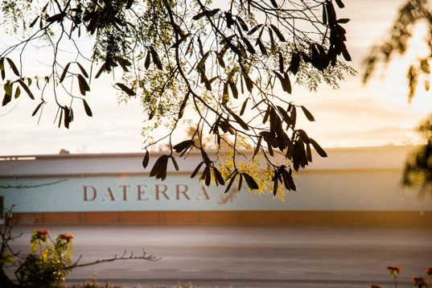

Beans
Here's what we're currently roasting
Ethiopia - Shantawene Abore
Sidamo - Washed
Ethiopian coffees are known for their bright, floral and fruity notes and this washed process coffee from Sidamo is no exception. We've found this coffee the perfect blend of interesting, with Black Tea, Lemongrass and Apricot notes, and familar with a satisfying full body.
Like most coffee, this is a washed process coffee where the bean is removed from the fresh cherry before being washed and dried.
We recommend this roasted to full city (medium) to give a balance between those interesting flavor notes and the roasty sweetness of a more developed coffee. However, this also comes out great in both lighter roasts for more emphasis on those flavor notes or darker for more emphasis on that roasty complexity.
Brazil - Summer Solstace
Daterra - Natural Process
This delicious coffee imidiately caught our attention when we tried it, with a remarkably clear, full, fruity body.
Not only a natural (or dry) process coffee, where the bean is dried inside the coffee cherry before being extracted and processed, this coffee is dried on the coffee plant itself before harvest, and the result is evident.Roasted ligher, this bean really lets the fruit shine through but carries enough balance for an enjoyable cup. Roasted medium, fruity undertones are still present, but with more rounded caramel and cocoa.
Must try!